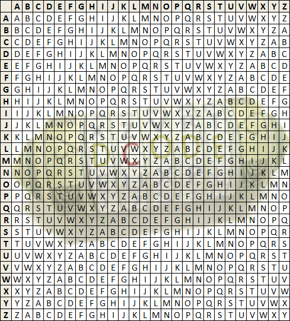

Today, we started a challenge with a very interesting scenario: A popular singer named "Ariana Venti" disappeared during the Coachelle Music Festival. There were various posters related to the event scattered around the walls and actual physical clues in a "backstage area". We received a crumbled up letter and beads in a ball of slime. Our team figured out that since the letter looked like gibberish, we would have to decode it using Vigenere, which requires a key. It was at first challenging because there were many varieties of words that the beads could spell out. Eventually, the beads spelled out "The key is in your hands", which means that the key needed to decipher it would be S-L-I-M-E. Using this key, we worked in small groups to decipher the long message on the paper. This took a while since there was math involved. By the end, we saw that the message from Ariana is asking us to go on her laptop and do the "ykw"(you know what). I wonder what we will be looking at on the laptop. Let see where this takes us next! -K
